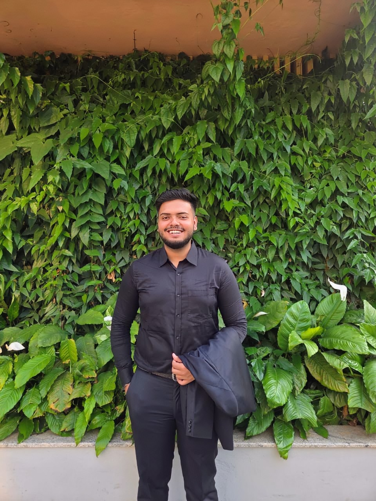

BDS Intern at MCODS Manipal dedicated to comprehensive patient care, with a keen eye for financial detail and resource management.

I am a BDS intern at Manipal College of Dental Sciences, Manipal (Batch 2021). My journey in dentistry is driven by a deep commitment to clinical excellence and a passion for managing academic and professional resources.
My background in diligent planning—from structuring long-term academic goals to managing personal investments—translates directly into the accountability required for my role as SRF Treasurer. I am dedicated to optimizing funding to elevate the Student Research Forum's initiatives, having previously shadowed seniors during the early years of the Manipal Dental Conference.
Clinical Rotations
Camps Attended
Ongoing Researches
SRF Treasurer
Started: 3rd Year BDS
Under the guidance of: Dr. Raghu Radhakrishnan & Dr. Smitha Sammith Shetty
Under the guidance of: Dr. Anupam Singh, Dr. Komal Smriti, Dr. P Kalyana Chakravarty, & Dr. Srikant G.
3 Months
Community outreach, epidemiological surveys, and providing preventive dental care in rural settings.
1.5 Months
Local anesthesia, uncomplicated extractions, and assisting in major surgical procedures and impactions.
1.5 Months
Fabrication of complete dentures, RPDs, impression making, and crown preparations.
1 Month
Composite restorations, anterior root canal treatments, and rubber dam isolation.
1 Month Each
Child behavior management, scaling/root planing, and assisting in orthodontic bracket placements.
1 Month Each
Radiograph interpretation (IOPA, OPG), oral lesion diagnosis, and histopathological slide interpretation.
Manipal College of Dental Sciences, Manipal
Batch 2021 | Expected Completion: Feb 2027
Currently completing mandatory rotatory internship.
BDM International, Kolkata
Science Stream (PCMB)
Physics, Chemistry, Mathematics, and Biology.
Financial council and committee management for the Student Research Forum.